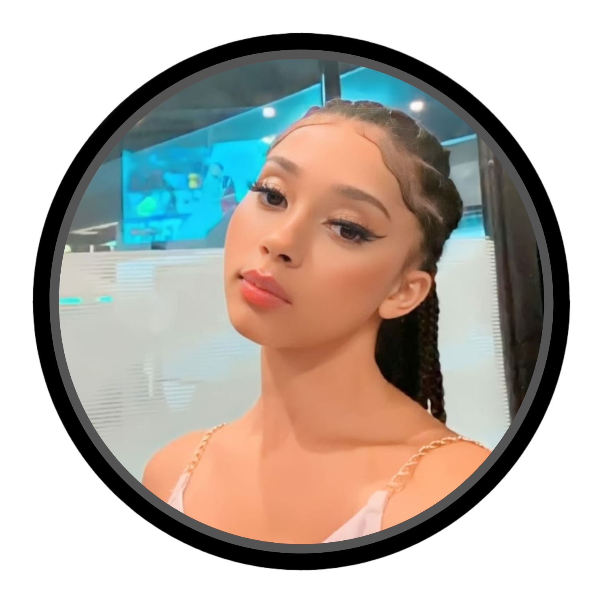
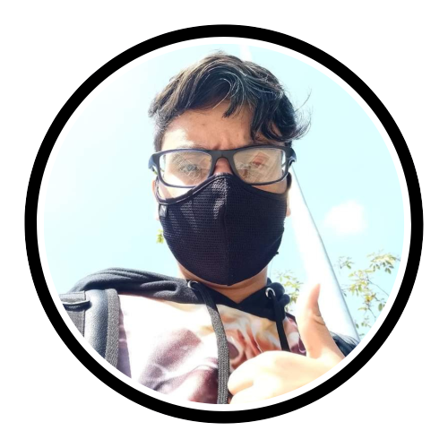
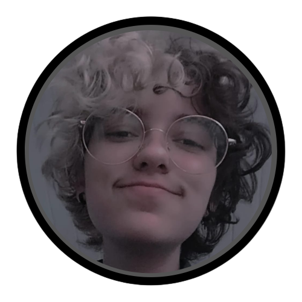
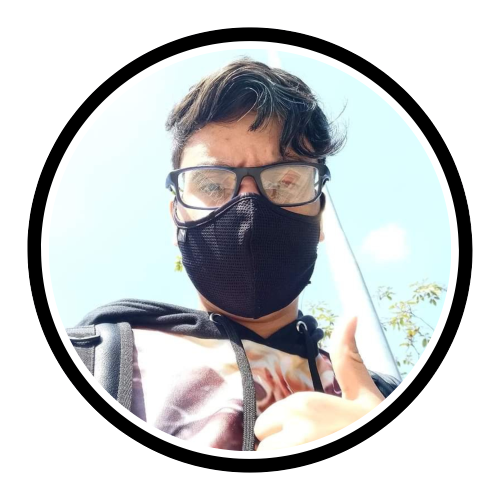
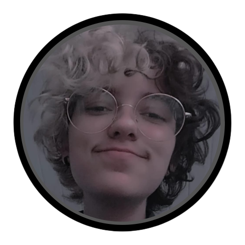
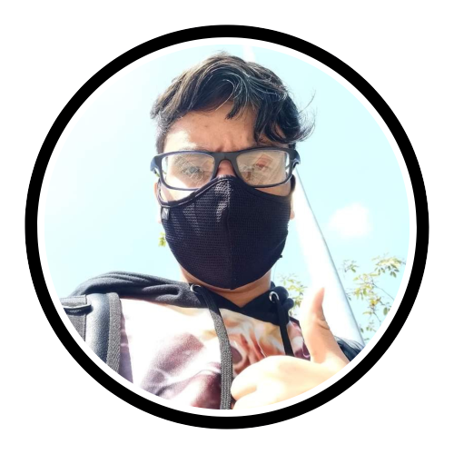
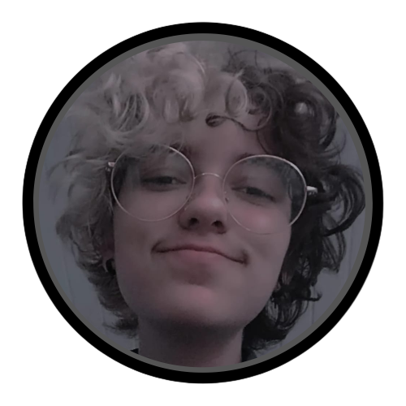

Criado em 2022, O Site foi feito para auxiliar estudantes, professores e pesquisadores.
proporcionando informações e tendo um certo entretenimento ao usuário pelo site, para que a experiência do cliente seja agradavel e que o nosso conteúdo publicado
consiga prender a atenção do usuário levando-o a aprender de forma mais fácil e rapida.
Nossa plataforma foi desenvolvida com muito carinho e tem o objetivo princípal de levar conhecimneto a todos possíveis usuários do site.
Nós da astro.mia acreditamos que o futuro está logo aí, os jovens são o nosso futuro. Então apoiamos o aprendizado
e fazemos o possível para que tenhamos um futuro brilhante pela frente mostrando para todos a magia do universo.
Nossa equipe contém 4 desenvolvedores chefes sendo eles:

Mariana S. Caetano da Silva
.png "Gustavo Moraes") Gustavo Moraes Daun

Pedro Henrique dos S. Martins

Isis Macedo e Andrade
Gustavo Moraes Daun

Pedro Henrique dos S. Martins

Isis Macedo e Andrade
Gustavo Moraes Daun

Pedro Henrique dos S. Martins

Isis Macedo e Andrade